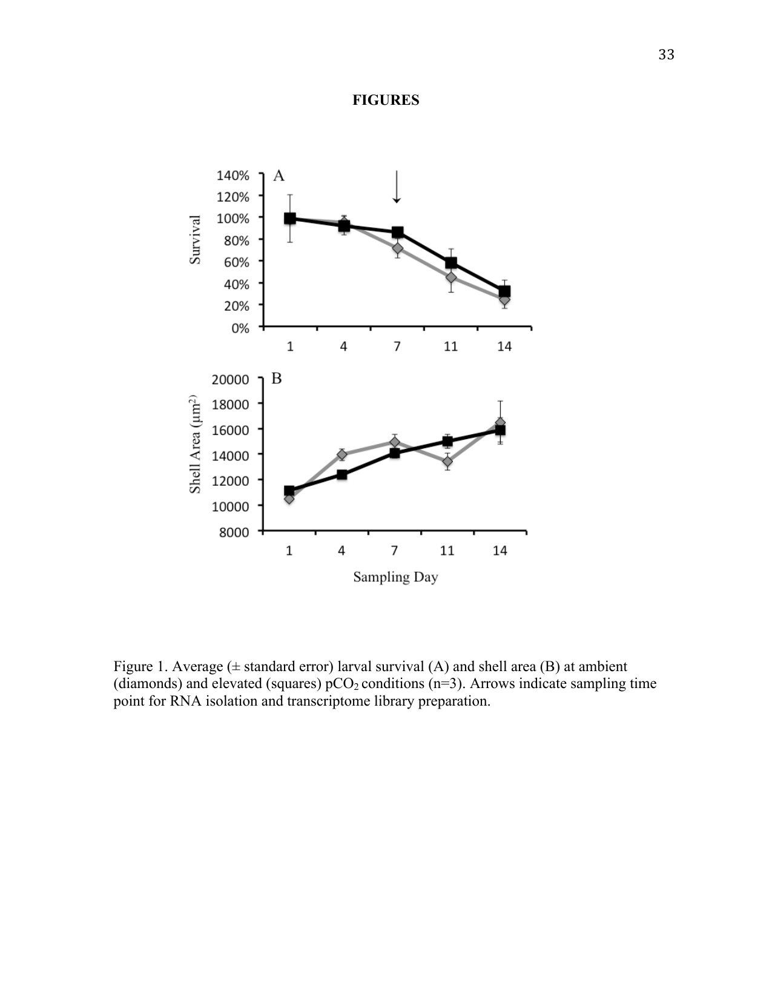
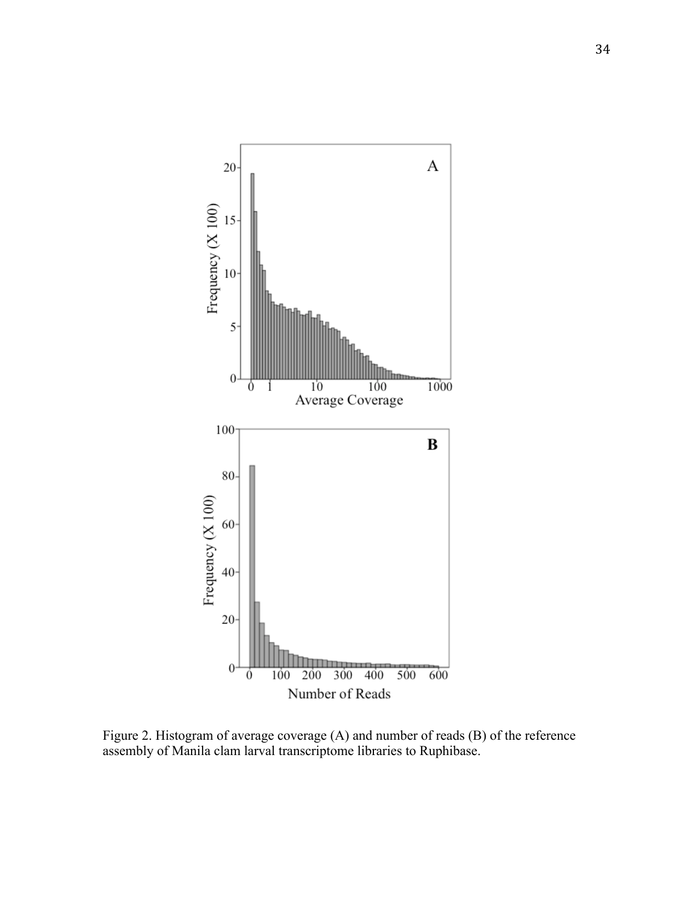
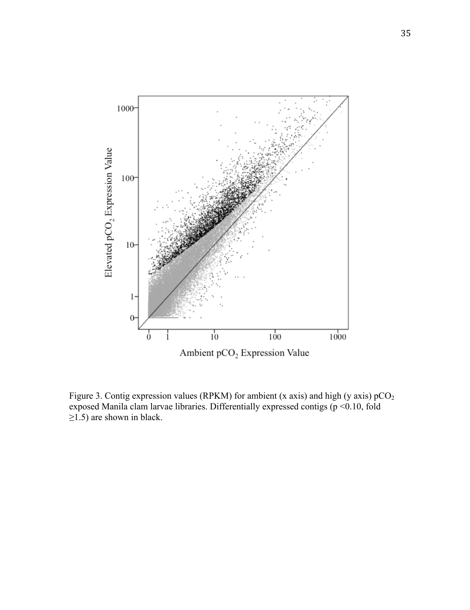
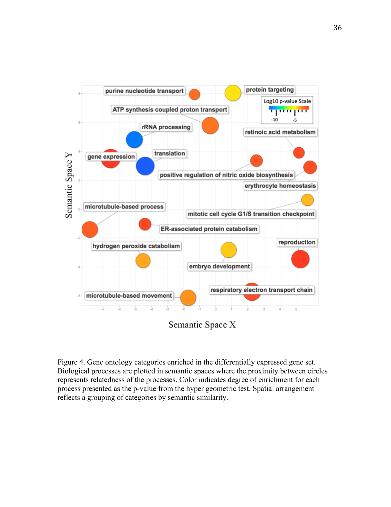

Impact of Elevated pCO2 Conditions on Larval Manila Clam Physiology Revealed by RNA Sequence Analysis
A short non-peer-reviewed scientific report
This report is a Roberts Lab working manuscript. It has not been peer reviewed.
It is shared to make small scientific efforts, preliminary analyses, technical observations, and exploratory work openly available.
This report is derived from Chapter I of David C. Metzger’s University of Washington Master of Science thesis (2012), Characterizing the effects of ocean acidification in larval and juvenile Manila clam, Ruditapes philippinarum, using a transcriptomic approach.
1 Background
The Manila clam (Ruditapes philippinarum) is an ecologically and commercially important bivalve mollusc found along the west coast of North America, Europe, and throughout Asia. Adult Manila clams are infaunal and produce planktonic larvae that remain in the water column for about two weeks. The larval period is considered a particularly vulnerable life stage given the small size, lack of a robust shell, and degree of morphological and physiological changes experienced during this period. Changes in environmental conditions that negatively impact larval survival could have ecosystem-wide consequences and disrupt aquaculture production. Studies on Manila clam larvae have documented sensitivity to several stressors including temperature, salinity, pathogens, and food availability (Numaguchi 1998; Paillard 2004; Inoue et al. 2007; Yan et al. 2009), however there are no studies investigating the impact of ocean acidification.
Ocean acidification refers to the reduced pH in oceans as a result of increased anthropogenic CO2 emissions (Caldeira and Wickett 2003; Feely et al. 2004; Sabine et al. 2004). Increasing partial pressure of CO2 (pCO2) in seawater alters the carbonate chemistry, effectively reducing the saturation state of biologically important carbonate compounds such as aragonite and calcite (Feely et al. 2004). Coastal waters are of particular concern as other natural and anthropogenic processes can exacerbate these changes in water chemistry (Feely et al. 2008, 2010). Environmental conditions associated with ocean acidification could be devastating to local organisms, particularly marine calcifiers that use carbonate minerals to form shells (Caldeira and Wickett 2003). Knowledge of the physiological mechanisms underlying species response to elevated pCO2 conditions will provide a better understanding of the organismal and ecological impacts of ocean acidification (Pörtner 2008; Widdicombe and Spicer 2008).
The use of transcriptomic approaches can provide valuable information on the organismal response to changing environmental conditions. Previous studies have investigated the impact of ocean acidification on gene expression, many focusing on sea urchins, which have significant genomic resources. One technique is to select a set of target genes and perform quantitative PCR analysis. This method has been used in sea urchins to characterize a suite of genes involved in stress response, biomineralization and metabolism (O’Donnell et al. 2009; Stumpp et al. 2011; Martin et al. 2011). Todgham and Hofmann (2009) and O’Donnell et al. (2010) used a more global approach, examining 1,057 sea urchin genes on a microarray platform and providing insight into the transcriptomic response of critical processes including acid-base balance and biomineralization. Most recently, Moya et al. (2012) utilized Illumina RNA sequencing and RNA-Seq (Wang et al. 2009) to characterize the transcriptome of the coral Acropora millepora. Consistent with the earlier microarray studies (Todgham and Hofmann 2009; O’Donnell et al. 2010), the authors noted that a majority of transcripts were decreased in corals exposed to elevated CO2, but also a more variable response of taxon-specific genes involved in biomineralization and skeletal organic matrix (Moya et al. 2012).
Advancements in high-throughput sequencing and bioinformatic analysis have allowed for the transcriptomic characterization of organisms with limited genomic information. Examples include differentially expressed genes in Pacific oyster populations (Gavery and Roberts 2012), transcripts involved in shell deposition in arctic clam (Clark et al. 2010), and biological processes associated with thermal stress and development in coral (Meyer et al. 2011). A value in this approach is that there are no a priori assumptions concerning the physiological response to a particular treatment or condition. This is particularly advantageous in characterizing the effects of ocean acidification, as studies in other taxa have shown a reallocation of resources that might not be readily evident. For example, in brittle stars increased calcification in response to elevated pCO2 resulted in a decrease in muscle mass (Wood et al. 2008), while in mussels a decrease in calcification was associated with an increase in energy demand required for maintaining pH homeostasis (Thomsen and Melzner 2010).
In this study, growth, mortality, and the underlying transcriptomic response of larval Manila clams are characterized under elevated pCO2 conditions. Characterization of the underlying processes affected by elevated pCO2 will provide valuable information toward elucidating the physiological response of Manila clam larvae to ocean acidification, and insight for future research investigating exposure of bivalves to elevated pCO2 conditions.
2 Methods
2.1 Recirculating seawater system
This experiment was conducted at the NOAA Northwest Fisheries Science Center in Seattle, Washington, in a laboratory designed to study the impacts of ocean acidification on marine resources. Seawater for the experiment was collected from Elliott Bay near Seattle and filtered to 2 µm, degassed using Liqui-Cel membrane contactors (Membrana, Weppertal, Germany) under partial vacuum, and added to individual recirculating seawater systems. Each system contained a gas exchange reservoir (492 L) in which ambient or elevated pCO2 conditions were created by bubbling CO2, air, or CO2-free air in seawater, with gas additions controlled by a program built in LabView software (National Instruments, Austin, TX). This program adjusted gas additions to maintain a treatment pH that equates to the target pCO2, given seawater temperature (18 °C), salinity (29.4 psu), and alkalinity (2069 µmol/kg). Water chemistry in each system was continuously monitored using a Durafet pH electrode, dissolved oxygen transmitter, and conductivity and temperature probes (Honeywell Process Solutions, Bracknell, Berkshire, UK) in a reservoir separate from the gas exchange reservoir. Gas-equilibrated seawater flowed into six replicate, 4.5 L, CO2-impermeable larval chambers per treatment with an average flow rate of 3 L/hour. Water was delivered through the base of each chamber and exited through a port in the lid covered by a 50 µm bag filter to retain larvae. Effluent from the chambers and water bath was pumped through a 2 µm filter, UV treatment, and heat pump before returning to the gas exchange reservoir. Water from each treatment system was continuously exchanged with the laboratory’s main reservoir (103% of each treatment exchanged/day), so that no treatments were isolated.
2.2 Experimental design
One system maintained near present-day (ambient) oceanic sea-surface levels of pCO2 (355 ± 16.85 µatm pCO2; pH 8.07 ± 0.02) and the second system maintained an elevated pCO2 concentration (897.74 ± 47.61 µatm pCO2; pH 7.71 ± 0.02), resulting in a difference of 0.36 pH units, a change expected to occur by the year 2100 (Caldeira and Wickett 2005). Spectrophotometric pH was measured on each sampling day in larval chambers within each system and was also used to confirm Durafet pH probe readings. Water samples for total alkalinity and dissolved inorganic carbon were taken on days 3, 5, and 12 and analyzed at the NOAA Pacific Marine Environmental Laboratory (PMEL). All samples were analyzed according to Department of Energy guidelines (DOE 1994). A summary of carbonate chemistry parameters monitored during this experiment is provided in Table 1.
Manila clam larvae (5 days old) were wrapped in moist cheesecloth and shipped overnight from Taylor Shellfish in Kona, Hawaii. Larvae were distributed in twelve 4.5 L chambers containing ambient pCO2 seawater to a density of approximately 11 larvae/mL (48,600 larvae/chamber). Larval chambers were placed in the appropriate recirculating seawater treatment system (6 chambers/treatment) where seawater containing either 400 µatm (ambient) or 900 µatm (elevated) pCO2 was distributed to each chamber. Larval clams were fed a mixture of algae (Nannochloris sp., Chaetoceros muelleri, Isochrysis galbana, and Pavlova lutherii) twice daily at a final concentration of 50,000–80,000 cells/mL. Chambers were cleaned on a semi-weekly schedule that coincided with sampling.
2.3 Larval mortality and size analysis
Three larval chambers from each treatment were sampled for mortality and size analysis on days 1, 4, 7, 11, and 14 of the study. To minimize potential impacts of reduced larval densities, consecutive sampling of chambers between sampling days was avoided. Sampling consisted of concentrating all larvae from a chamber on a 50 µm screen and adding 50 mL of the appropriate seawater. Two replicate samples of ~50 larvae each were then transferred into 12-well plates for subsequent mortality counts and size analysis. Larval mortality was determined by counting the number of dead larvae using an inverted compound microscope at 20× magnification (Nikon). Ethanol (75%) was then added to immobilize live larvae in order to count the total number of larvae per well. Larval size was determined by analyzing photographs taken at 5× magnification. Total surface area for each larva was calculated using ImageJ (Rasband 1997--2011; Abramoff et al. 2004). Data collected from replicate samples within a chamber were averaged. T-tests were conducted to compare mean larval sizes between treatments on each sampling day, with statistical significance based on Bonferroni-corrected alpha values (< 0.01). Differences in survival were assessed by generating the slope of the regressions based on larval abundance in each individual larval chamber, and a generalized linear model was then applied to calculated slope values on each sampling day. All statistical analyses were conducted using SPSS statistical software (IBM, Somers, NY).
2.4 Larval RNA isolation
Samples for RNA isolation were taken on day 7 by straining larval chambers onto a 50 µm screen to remove seawater. Samples were snap frozen in liquid nitrogen and stored at −80 °C. Two chambers from each treatment were harvested in this manner for a total of four samples consisting of ~30,000 larvae each. RNA was isolated using Tri-reagent (Molecular Research Center, Inc.) following manufacturer protocols. Equal quantities of total RNA (20 µg) from the replicate samples for each treatment were pooled and used for the construction of two transcriptome libraries.
2.5 High-throughput sequencing
Library construction and sequencing were performed at the University of Washington High Throughput Genomics Unit on the Illumina HiSeq platform (Illumina Inc., San Diego, CA) using standard protocols as outlined by the TruSeq RNA Sample Preparation Guide (part #15001836 Rev A) and the HiSeq 2000 User Guide (part #15011190 Rev. K). CLC Genomics Workbench version 4.0 (CLC bio) was used for all sequence analysis. Initially, sequences were trimmed based on a quality score of 0.05 (Phred; Ewing and Green (1998); Ewing et al. (1998)) and the number of ambiguous nucleotides (> 2 on ends). Sequences smaller than 25 bp were also removed.
2.6 Reference assembly
For the reference assembly, RuphiBase, a transcriptome database for R. philippinarum (http://compgen.bio.unipd.it/ruphibase/), was used as the reference transcriptome. At the time of analysis this database consisted of 32,606 contiguous sequences (contigs) generated from 454 (Roche) reads (Milan et al. 2011), 5,656 Sanger Expressed Sequence Tags (ESTs), and 51 publicly available mRNA sequences. Contigs in RuphiBase are annotated by Gene Ontology (GO) and protein (NCBI nr database) BLAST results. Sequences from the ambient and elevated pCO2 library treatments were combined and mapped to the RuphiBase transcriptome database using the following parameters: ungapped alignment, mismatch cost = 2, limit = 8.
2.7 RNA-Seq analysis
RNA-Seq analysis was carried out to determine differential gene expression patterns between the two libraries, using the following parameters: unspecific match limit = 10, maximum number of mismatches = 2, minimum number of reads = 10. Expression values were measured in RPKM (reads per kilobase of exon model per million mapped reads; Mortazavi et al. (2008)). Differentially expressed genes were identified as having > 1.5-fold difference between libraries and a p-value < 0.10 (Baggerly et al. 2003). Hypergeometric tests on annotations were performed to identify enriched biological processes. This test procedure was performed using CLC Genomics Workbench v4.0 and is similar to the unconditional GOstats test of Falcon and Gentleman (2007). Significantly enriched (p < 0.10) GO terms and associated p-values were visualized using REViGO (Reduce + Visualize Gene Ontology) (Supek et al. 2011).
3 Results
3.1 Larval growth and survival
Survival and growth of R. philippinarum were similar at both pCO2 treatments (p > 0.05) (Figure 1). Larval shell size increased at similar rates in both treatments over the course of the experiment, and no difference was detected in larval size between pCO2 treatments. Larval survival decreased at similar rates between pCO2 treatments and no difference in survival was detected.

3.2 Characterization of short read sequences
A total of 244,082,559 reads were generated with an average length of 36 bases. After quality trimming, 99.7% of the reads were retained. All data are available in the NCBI Short Read Archive database (Sample ID: SRS283130). Reference assembly of reads from the Illumina HiSeq libraries mapped to 84% of the contigs in RuphiBase. Average coverage for the assembly was 17× with an average number of reads of 133 (Figure 2).

3.3 RNA-Seq analysis
RNA-Seq using RuphiBase as the scaffold identified 3,954 differentially expressed contigs. Of those, 162 contigs were expressed at a lower level in larvae exposed to elevated pCO2 conditions, and 3,792 were expressed at an elevated level (Figure 3). Among differentially expressed contigs, 204 were expressed over 10-fold higher in elevated pCO2 conditions, including the calcification gene perlucin 6, which was expressed 133-fold higher under elevated pCO2 conditions. Only 8 contigs were expressed 10-fold lower under elevated pCO2 conditions. A complete list of all differentially expressed genes is provided in Supplemental Table 1.

3.4 Gene enrichment analysis
Differentially expressed contigs that were annotated in RuphiBase (n = 781) were subjected to enrichment analysis to identify enriched biological processes. Hypergeometric tests revealed 55 biological processes significantly enriched in the differentially expressed gene set. The most enriched processes were associated with translation, followed by development, hydrogen peroxide catabolism, ATP synthesis-coupled proton transport, and the respiratory electron transport chain (Figure 4). Contigs corresponding with enriched biological processes are denoted (*) in Supplemental Table 1.

4 Discussion
Growth and survival of R. philippinarum larvae were similar between the pCO2 treatments. These results are consistent with a recent study in juvenile Ruditapes decussatus for which no difference in growth or mortality was observed in elevated pCO2 environments (Range et al. 2011). In contrast, a majority of studies in larval bivalves have demonstrated that ocean acidification negatively affects survival, growth, and physiology (Michaelidis et al. 2005; Orr et al. 2005; Gazeau et al. 2007; Talmage and Gobler 2009; McDonald et al. 2009; Miller et al. 2009). Larval tolerance to increased pCO2 is likely taxa- and age-dependent. This study was designed to assess the physiological response of Manila clam larvae with fully calcified shells to an acute change in carbonate chemistry. Analysis of parameters such as fertilization rates, or the response of trochophore and early veliger stage clam larvae, could reveal an impact of altered pCO2 conditions. Similar growth patterns under the two pCO2 conditions suggest that transient exposure of mid-stage veliger larvae to acidified water would not significantly impact Manila clam larval survival.
Elevated pCO2 significantly altered gene expression patterns in Manila clam larvae, as revealed by RNA-Seq analysis. Increased global gene expression (Figure 3), as well as the enrichment of genes associated with translational activity (Figure 4; Supplemental Table 1), are consistent with an increase in the protein synthesis necessary to maintain homeostasis in an elevated pCO2 environment. Increased expression could also be a response to repairing or replenishing damaged protein products. Regardless of the primary reason for the upregulation of this suite of genes, protein synthesis is an energetically demanding process that could impair other critical physiological processes by limiting available energy resources. It is possible that the effects of the physiological stress induced by elevated pCO2 might become apparent only in a later stage of development. Thus, any species fitness predictions based solely on the absence of an impact on larval growth and survival should be regarded with caution.
Another group of differentially expressed genes identified are associated with ATP-coupled proton transport (Figure 4). ATP-coupled proton transport is an integral part of the electron transport chain and the generation of ATP (Senior et al. 2002). These genes are also involved in several other vital biological processes including the maintenance of hemolymph pH (Byrne and Dietz 1997) and regulation of ion concentrations involved in calcification (Liang et al. 2007; McConnaughey and Gillikin 2008). Maintenance of hemolymph pH would be required under decreased seawater pH conditions, as bivalves possess an open circulatory system. In fact, it has been suggested that the ability to control extracellular acid-base balance can determine species tolerance to elevated pCO2 levels (Widdicombe and Spicer 2008). ATP-coupled proton transport genes are also involved in regulating ion transport, including Ca2+. Increased expression of these genes could be indicative of an organism increasing scavenging efforts as a result of reduced calcium carbonate ions. By increasing scavenging efforts, Manila clams could increase their tolerance for lower concentrations of calcium carbonate, as they would be more adept at obtaining these molecules at lower concentrations.
Similarly, other proteins such as calmodulin are involved in scavenging and detecting Ca2+ ions. Calmodulin is known to be involved in Ca2+ metabolism and calcification in bivalves (Li et al. 2005). Calmodulin, and a regulator of calmodulin, G protein beta-subunit, were expressed at a higher level in larvae exposed to elevated pCO2 concentrations (Supplemental Table 1). In addition, expression of perlucin 6, a gene involved in nucleation of calcium carbonate ions during shell formation (Blank et al. 2003; Hofmann et al. 2008), was 133-fold higher in larvae exposed to elevated pCO2. Coordinated expression of these calcium-associated genes may be essential for larval tolerance of elevated pCO2 conditions.
Regulation of protein synthesis occurs on multiple levels including gene expression, translation, and post-translational modifications, and it should be noted that changes in transcription do not necessarily correlate to changes in the corresponding protein concentration or activity (Feder and Walser 2005; Tomanek 2011). In fact, it is likely that responses to ocean acidification are regulated at multiple levels. For instance, a study in larval barnacles found that elevated pCO2 induced changes in protein concentrations and post-translational modifications (Wong et al. 2011). Thus, an integrated approach to evaluate physiological responses at both the transcriptional and translational level will improve our understanding of how species will respond to environmental perturbation.
In summary, this study illustrates that transcriptomic characterization provides important insight into organismal processes affected by elevated pCO2 conditions that are not necessarily apparent with standard morphometric and survival analysis. Furthermore, these data indicate that increased translational activity and specific processes associated with ion transport could contribute to short-term resilience in clams. Further research is needed to determine how these transcriptomic changes and elevated pCO2 will impact Manila clams at different developmental stages, and whether acute exposures to elevated pCO2 have a long-term influence on survival.
5 Water chemistry
| Treatment | pCO2 (µatm) | pH |
|---|---|---|
| Ambient | 355 ± 16.85 | 8.07 ± 0.02 |
| Elevated | 897.74 ± 47.61 | 7.71 ± 0.02 |
6 Suggested citation
Metzger, D. C., and S. B. Roberts. 2012. Impact of elevated pCO2 conditions on larval Manila clam physiology revealed by RNA sequence analysis. Current Findings. Available at: https://robertslab.github.io/current-findings/reports/manila-clam-larvae-pco2-rnaseq/
7 Version history
| Version | Date | Notes |
|---|---|---|
| 0.1 | 2026-06-17 | Migrated from Metzger_washington_0250O_10509.pdf (Chapter I) |